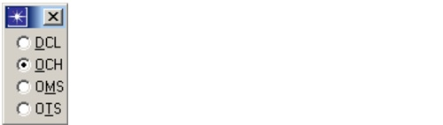

Creating a Baseline Scenario > Editor Windows > Network Layers
Network Layers
SP Guru Transport Planner represents a WDM network in multiple layers You can switch between layers in three ways:
- Click on a network-layer button in the toolbar.
Figure 3-6 Network Layer Buttons in Toolbar
- Click on a layer radio button in the Layer Selector. To show this window, choose View > Show Layer Selector. To hide this window, click the Close button on the upper right corner.
Figure 3-7 layer Selector Window

- Right-click in the network background and choose the network layer from the pop-up window. In addition to the standard network-layer views, you can also choose one of the following custom views:
- OCH Express Layer—Shows the express links and nodes in red (for more information, see Optical Express Layer )
- DCL Mesh Only—Shows only meshed DCL links and capacity
DCL Ring Only—Shows only DCL links that belong to rings and the usable ring capacity on these links
You can hide or show node icons, node names, and link captions by selecting View > Show Annotations in Subnet or clicking the icon in the toolbar.
Figure 3-8 Show/Hide Buttons in Toolbar
.
| Home © 1987-2007 OPNET Technologies, Inc. All Rights Reserved. This software may be covered by one or more U.S. Patents. See complete patent notice in the Legal Notices section. OPNET Support Center |